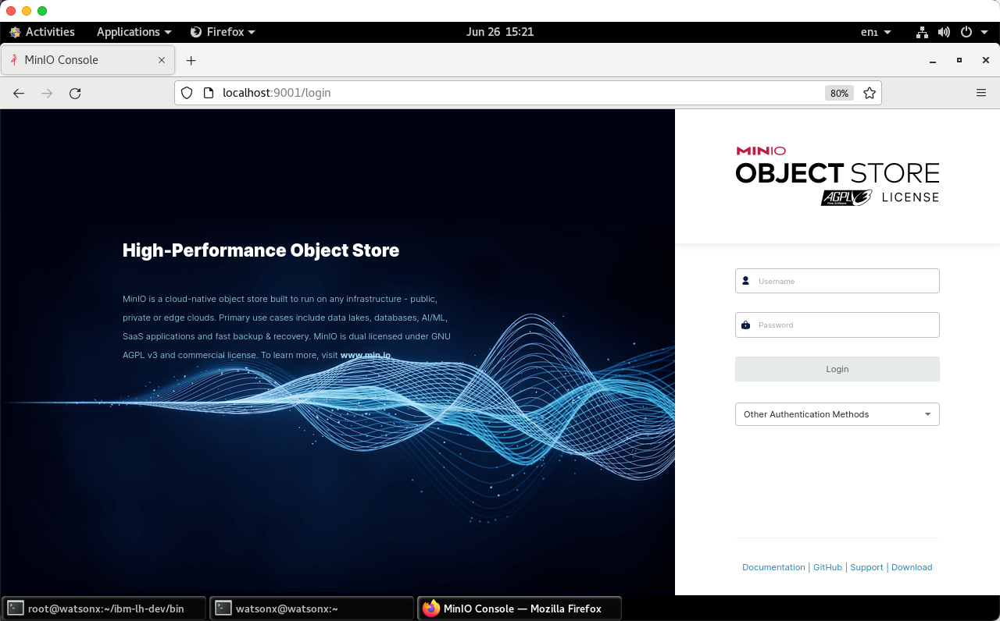
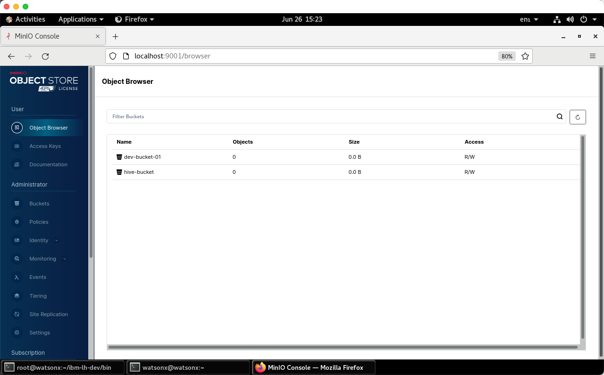
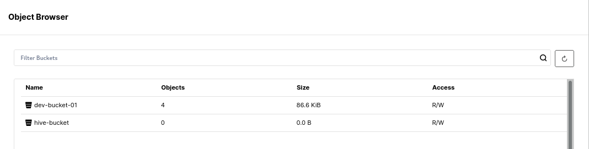
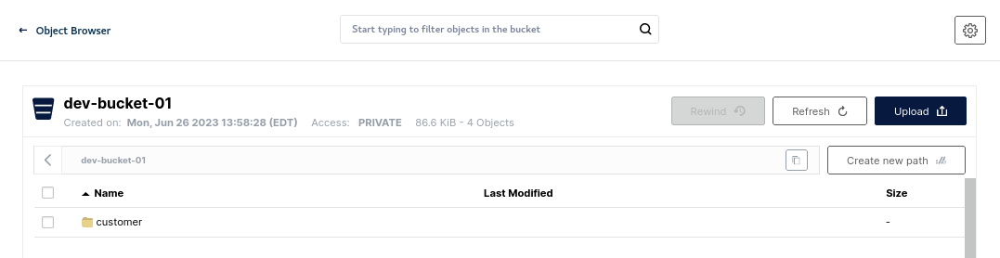

Using the MinIO console UI
MinIO is a high-performance, S3 compatible object store. Rather than connect to an external S3 object store, we are going to use MinIO locally to run with IBM watsonx.data.
To connect to MinIO, you will need to extract the MinIO credentials by querying the docker container. You must be the root user to issue these commands.
export LH_S3_ACCESS_KEY=$(docker exec ibm-lh-presto printenv | grep LH_S3_ACCESS_KEY | sed 's/.*=//')
export LH_S3_SECRET_KEY=$(docker exec ibm-lh-presto printenv | grep LH_S3_SECRET_KEY | sed 's/.*=//')
echo "MinIO Userid : " $LH_S3_ACCESS_KEY
echo "MinIO Password: " $LH_S3_SECRET_KEY
MinIO Userid : c4643026087cc21989eb5c12 MinIO Password: 93da45c5af87abd86c9dbc83
Open your browser and navigate to:
- Minio console - http://ussouth.techzone-services.com:xxxxx
- VMWare Image - http://localhost:9001/

Login with object store credentials found above (These will be different for your system). You should see current buckets in MinIO.

We are going to examine these buckets after we populate them with some data.
Creating Schemas and Tables
Not all catalogs support creation of schemas - as an example, the TPCH catalog is not writeable. We will use the iceberg_minio catalog for this exercise. We will need to get some details before we continue.
Make sure you are connected as the root user and are in the proper directory.
cd /root/ibm-lh-dev/bin
Login to the Presto CLI.
./presto-cli.sh --catalog iceberg_minio
Create schema workshop in catalog iceberg_minio. Note how we are using the dev-bucket-01 bucket which you should have seen in the MinIO object browser.
CREATE SCHEMA IF NOT EXISTS workshop with (location='s3a://dev-bucket-01/');
Show the schemas available.
show schemas;
Schema ---------- workshop (1 row)
Use the workshop schema.
use workshop;
Creating tables
Create a new Apache Iceberg table using existing data in the sample Customer table as part of the TPCH catalog schema called TINY.
create table customer as select * from tpch.tiny.customer;
Show the tables.
show tables;
Table ---------- customer (1 row)
Quit Presto.
quit;
Refresh the Minio screen (see button on the far-right side).

You should now see new objects under dev-bucket-01. Click on the bucket name and you will see the customer table.

Selecting the customer object will show that there is data and metadata in there.

How do we know that this data is based on Apache iceberg? If you open the file under metadata, you should see metadata information for the data we are storing in parquet file format.

Do I really need Apache Iceberg?
YES, YOU DO! however it is good to understand why? Metadata is also stored in the Parquet file format but only for the single parquet file. If we add more data/partitions, the data is split into multiple Parquet files, and we don’t have a mechanism to get the table to parquet files mapping. Run the following example to understand this better.
You need to get the access keys for MinIO before running the following lab. Make sure you are still connected as root.
export LH_S3_ACCESS_KEY=$(docker exec ibm-lh-presto printenv | grep LH_S3_ACCESS_KEY | sed 's/.*=//')
export LH_S3_SECRET_KEY=$(docker exec ibm-lh-presto printenv | grep LH_S3_SECRET_KEY | sed 's/.*=//')
Open the developer sandbox to connect to MinIO, download the selected parquet file and inspect the parquet file contents.
./dev-sandbox.sh
List all files in the object store (MinIO).
/scripts/s3-inspect.py --host ibm-lh-minio-svc:9000 --accessKey $LH_S3_ACCESS_KEY --secretKey $LH_S3_SECRET_KEY --bucket dev-bucket-01
dev-bucket-01 b'customer/data/e9536a5e-14a1-4823-98ed-cc22d6fc38db.parquet' 2023-06-06 14:31:47.778000+00:00 6737d7268fcb3eb459b675f27f716f48 75373 None dev-bucket-01 b'customer/metadata/00000-e26c56e0-c4d7-4625-8b06-422429f6ba8d.metadata.json' 2023-06-06 14:31:48.629000+00:00 2e722c7dd83c1dd260a7e6c9503c0e04 3272 None dev-bucket-01 b'customer/metadata/7cb074a4-3da7-4184-9db8-567383bb588a-m0.avro' 2023-06-06 14:31:48.401000+00:00 655a5568207cc399b8297f1488ef77e7 6342 None dev-bucket-01 b'customer/metadata/snap-6143645832277262458-1-7cb074a4-3da7-4184-9db8-567383bb588a.avro' 2023-06-06 14:31:48.445000+00:00 0c3714299d43ae86a46eabdcaac1351e 3753 None
You can extract the string with the following command.
PARQUET=$(/scripts/s3-inspect.py --host ibm-lh-minio-svc:9000 --accessKey $LH_S3_ACCESS_KEY --secretKey $LH_S3_SECRET_KEY --bucket dev-bucket-01 | grep -o '.*parquet' | sed -n "s/.*b'//p")
The file name that is retrieved is substituted into the next command. Note: The file name found in $PARQUET will be different on your system.
/scripts/s3-download.py --host ibm-lh-minio-svc:9000 --accessKey $LH_S3_ACCESS_KEY --secretKey $LH_S3_SECRET_KEY --bucket dev-bucket-01 --srcFile $PARQUET --destFile /tmp/x.parquet
Describe the File Contents.
/scripts/describe-parquet.py /tmp/x.parquet
---------------------- metadata:created_by: num_columns: 8 num_rows: 1500 num_row_groups: 1 format_version: 1.0 serialized_size: 851 ---------------------- ---------------------- schema: custkey: int64 name: binary address: binary nationkey: int64 phone: binary acctbal: double mktsegment: binary comment: binary ---------------------- ---------------------- row group 0: num_columns: 8 num_rows: 1500 total_byte_size: 74555 ---------------------- ---------------------- row group 0, column 1: file_offset: 0 file_path: physical_type: BYTE_ARRAY num_values: 1500 path_in_schema: name is_stats_set: True statistics: has_min_max: False min: None max: None null_count: 0 distinct_count: 0 num_values: 1500 physical_type: BYTE_ARRAY logical_type: None converted_type (legacy): NONE compression: GZIP encodings: ('DELTA_BYTE_ARRAY',) has_dictionary_page: False dictionary_page_offset: None data_page_offset: 112 total_compressed_size: 599 total_uncompressed_size: 2806 ----------------------
Note: In this instance we used an insert into select * from customer with no partitioning defined so there was only 1 parquet file and only 1 row group. This is not the norm, and we deliberately did this to show you the value of using Apache Iceberg file format which can be used by multiple runtimes to access Iceberg data stored in parquet format and managed by hive metastore.
Exit from the Sandbox.
exit